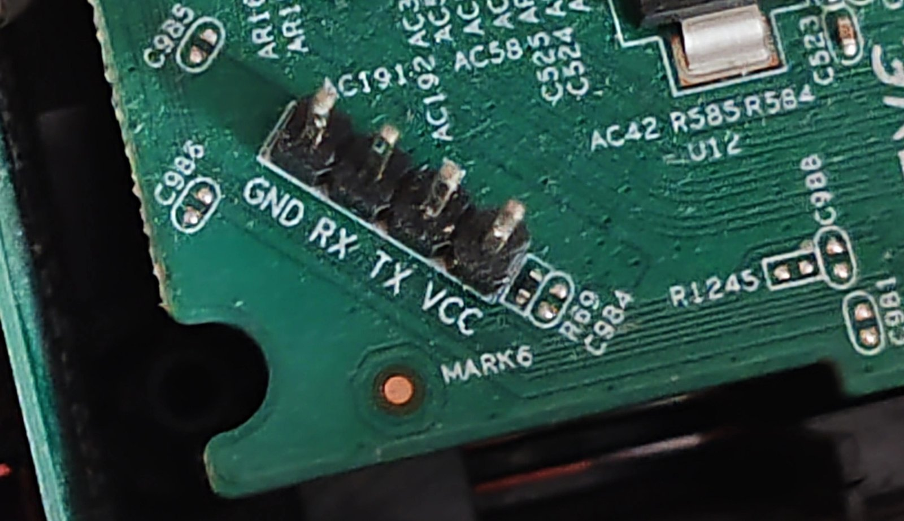

Установка через UART / Installing over UART
RU ниже, EN — в конце.
⚠️ Прочитайте до начала
- Только для Ротек RX-23302 с SoC RTL8197FH-VG (заводская прошивка
ELECTRA-RX23302). Ревизия RX-23302R и другие модели не проверялись. Проверка до прошивки: в самом начале лога загрузки по UART (шаг 1) у проверенного устройства —Realtek RTL8197F-VG boot code …. Другая строка — не прошивайте. - Проще без UART: с 0.1.2 OpenWrt ставится кнопкой Reset и TFTP, без разборки —
install-tftp.md. UART — запасной путь и для тех, кто хочет видеть лог
(установка через заводской веб-интерфейс Ростелекома не проверялась). Дальнейшие обновления — уже из LuCI, без UART
(файл
…-squashfs-sysupgrade.bin, см. README). - Нужен разбор корпуса и USB-UART адаптер 3,3 В. Адаптер на 5 В может сжечь SoC.
- Вы делаете это на свой риск. Гарантия на устройство пропадёт.
- Заводская прошивка во втором слоте флеша (0x800000) не затирается — путь назад есть, см. recovery.md.
Что понадобится
| USB-UART адаптер 3,3 В | CH340, CP2102, FT232 — любой |
| Провода | 3 штуки: GND, TX, RX |
| Компьютер | Linux (проверено) или Windows/macOS с Python 3 |
| Python 3 + pyserial | pip install pyserial |
| Образ | openwrt-…-electra_rx23302-squashfs-full.bin из Releases или своей сборки |
| Время | ~45 мин (передача ~27 мин + запись ~13 мин + загрузка и сверка ~5 мин) |
1. Подключение UART
Параметры порта: 38400 8N1, без управления потоком.
Где UART: снимите крышку — на плате торчат 4 штыря, это и есть UART. Назначение каждого штыря подписано на плате. Паять не нужно, провода с гнёздами (Dupont) надеваются прямо на штыри. Питание (VCC/3,3 В) не подключать — нужны только GND, TX и RX.
Если вывода нет — поменяйте TX и RX местами, ничего не сгорит.

Слева направо: GND, RX, TX, VCC. VCC не подключать.
Соединение крест-накрест: TX адаптера → RX роутера, RX адаптера → TX роутера, GND → GND. Питание (VCC) не подключать.
Проверка: откройте порт любым терминалом (picocom -b 38400 /dev/ttyUSB0), включите роутер —
должен пойти лог загрузки с Booting.... Если видите мусор — проверьте скорость 38400.
2. Прошивка
Терминал закройте (порт должен быть свободен), затем:
python3 tools/flash-uart.py openwrt-rtl819x-rtl8197f-electra_rx23302-squashfs-full.bin /dev/ttyUSB0
Когда скрипт напишет «жду загрузчик» — выключите и включите роутер. Скрипт поймает
приглашение <RealTek> (шлёт Esc во время загрузки), затем:
- передаст образ в ОЗУ по XMODEM (~27 мин);
- запишет во флеш командой
FLW(~13 мин, печатаются точки) — питание не трогать; - дождётся конца записи и напечатает две md5-суммы — по ним флеш сверяется после загрузки (шаг 3).
В конце должно быть ГОТОВО.
Если передача XMODEM оборвалась — флеш ещё не тронут, просто запустите заново.
Ключ
--flrдобавляет сверку прямо в загрузчике (FLR+CMP, ещё ~15 мин). По умолчанию сверка — из Linux: так быстрее.Если работаете с загрузчиком руками: на вопрос
(Y)es, (N)oотвечайтеYи Enter. Без Enter загрузчик молча ждёт бесконечно — выглядит как зависание.
3. Первая загрузка
В терминале на 38400:
<RealTek>reboot
(или просто выключите и включите питание).
После загрузки (~1,5 мин) нажмите Enter и сверьте флеш — суммы должны совпасть с теми,
что напечатал flash-uart.py:
md5sum /dev/mtd1
head -c <число из вывода flash-uart.py> /dev/mtd2 | md5sum
Не совпали — не продолжайте, прошейте заново. Совпали — сотрите старые настройки:
firstboot -y
Затем отдельной командой:
sync; reboot
Отправляйте команды по одной и коротко, подождав ~1 минуту после
Please press Enter: драйвер Wi-Fi при запуске выводит много сообщений, и длинная строка может потеряться.
4. После установки
Роутер работает как обычный OpenWrt-роутер:
| LAN | 192.168.0.1, DHCP для клиентов |
| WAN (синее гнездо) | DHCP-клиент |
| Wi-Fi | RX23302 (2,4 ГГц) и RX23302-5G, пароль 1234567890 — смените! |
| Веб | LuCI: http://192.168.0.1, пользователь root, пароля нет — задайте при первом входе |
| SSH | ssh root@192.168.0.1 |
Гнёзда: синее = WAN, жёлтые = LAN1, LAN2.
English
Read first. For Rotek RX-23302 with RTL8197FH-VG only (stock firmware ELECTRA-RX23302); the RX-23302R revision is untested. Before flashing, the UART boot log must start with Realtek RTL8197F-VG boot code …. Since 0.1.2 the easier way is Reset + TFTP without opening the case (install-tftp.md);
UART is the fallback. For UART you need to open
the case and use a 3.3 V USB-UART adapter. The stock firmware in the second flash slot
(0x800000) is not overwritten, see recovery.md. At your own risk. Only the first
install needs UART; later upgrades go through LuCI / sysupgrade with …-squashfs-sysupgrade.bin.
Serial: 38400 8N1, no flow control. Remove the cover: the UART is the 4-pin header on the board, each pin is labelled on the PCB. No soldering, Dupont wires fit. GND–GND, adapter TX → router RX, adapter RX → router TX, do not connect VCC. No output — swap TX/RX, nothing breaks.
Left to right: GND, RX, TX, VCC. Leave VCC unconnected.
Flash:
pip install pyserial
python3 tools/flash-uart.py <full.bin> /dev/ttyUSB0
Power-cycle the router when asked. The script catches the <RealTek> prompt, sends the image
over XMODEM (~27 min), writes it with FLW (~13 min, do not cut power) and prints two md5 sums
for verification after boot. --flr adds an in-bootloader read-back (FLR + CMP, ~15 min more); verifying from Linux is
faster, so it is off by default. Manual bootloader use: answer (Y)es, (N)o with Y and
Enter — without Enter it silently waits forever and looks hung.
First boot: reboot at the <RealTek> prompt (or power-cycle); after boot check
md5sum /dev/mtd1 and head -c <N> /dev/mtd2 | md5sum against the sums printed by the script,
then run firstboot -y, then
sync; reboot — as separate short commands, about a minute after Please press Enter.
Defaults: LAN 192.168.0.1 (DHCP server), WAN = blue port (DHCP client), Wi-Fi RX23302 /
RX23302-5G with password 1234567890 (change it), LuCI at http://192.168.0.1, user root,
no password until you set one.